Introduction
What is Substance 3D Scene Automation?
Substance 3D Scene Automation (SSCA) is a set of APIs that allows you to create workflows to automate pipelines to create and process 3D assets at scale. SSCA uses USD to allow for format and visual consistency as well as performance optimization across the workflow.
SSCA’s powerful pipeline tools mean that it has use cases across industries. Generate textures for game assets, automate e-commerce content creation, or create hundreds of variations of a product during the design phase.
Important
SSCA is also designed to be as easy to use as possible - it doesn’t require USD-specific knowledge or extensive programming experience. Users with basic Python skills should be able to easily pick up and use SSCA.
While SSCA is built on USD, we developed several plugins to support multiple filetypes: USD, FBX, OBJ, and GLTF. At the time of writing, USD is still relatively new in the 3D space, and many well-known 3D applications do not yet have full support for all features of the format. If you’re saving to USD format, we recommend using an application with native USD support for viewing or testing your SSCA creations. Screenshots in this user guide were taken from Omniverse Create, an application created by Nvidia for building and working with USD scenes.
How to install and configure SSCA
SSCA Environment
In order to use SSCA modules, the user must run their scripts with the python.exe provided in the SSCA package.
Due to the system environment restrictions, it is also recommended to install an IDE (Integrated Development Environment) like Visual Studio Code or PyCharm.
Important
If you already developed with USD, be sure you clean your PATH (LD_LIBRARY_PATH for linux/mac) from other USD installation paths before setting up SSCA, as there will be conflicts. This can be done by removing USD/bin and USD/lib from your PATH.
In addition, SSCA has python package and USD plugin dependencies. Therefore, please be careful when setting values in either PXR_PLUGINPATH_NAME or PYTHONPATH as they could also conflict with SSCA.
Visual Studio Code Instructions (version 1.99.2)
Set up new project
Download and install the free version of Visual Studio Code.
Download and unzip the Substance 3D SSCA package.
Move the contents of the unzipped SSCA package to your desired installation location.
In our example SSCA package content will be unzipped into:
C:/ssca/
Open Visual Studio Code.
On the Welcome tab click “Open Folder…”. In the explorer popup window, create and/or select your project folder.
In our example, our project folder will be:
C:/projects/myProject/
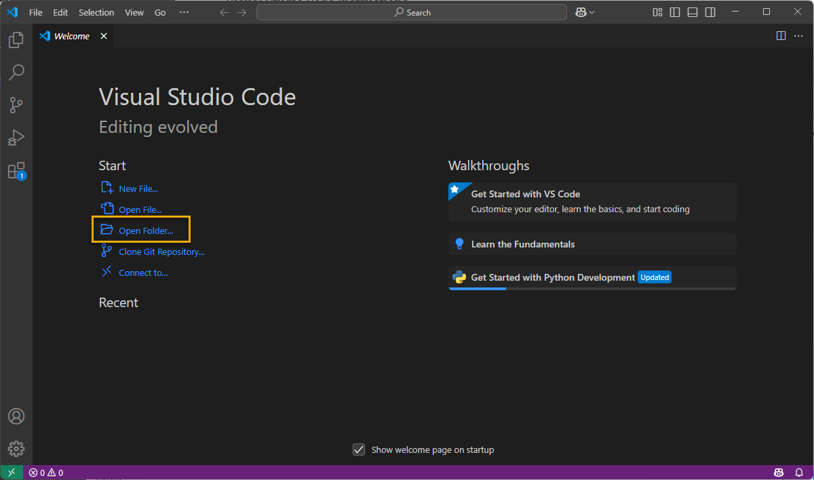
Expand the project folder in the explorer of VS Code UI
Create a Python file by clicking on the project folder “New File…” icon and give the file a name including the ‘.py’ extension.
In our example the script will be named:
main.py
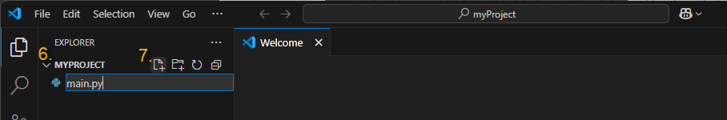
The python file should appear under your project folder.
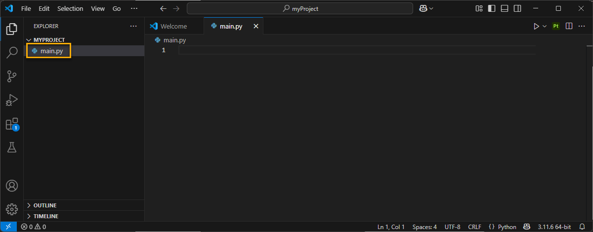
Set up the Python interpreter
Visual Studio Code allows the user to set the python interpreter for a specific project. Since VS Code uses the system Python by default, we need to create a virtual environment to work with SSCA.
With your project opened, click on the Python interpreter version in the very bottom right of the VS Code interface.
A drop down menu will appear at the top where we have a few options.
Click on “Create Virtual Environment”
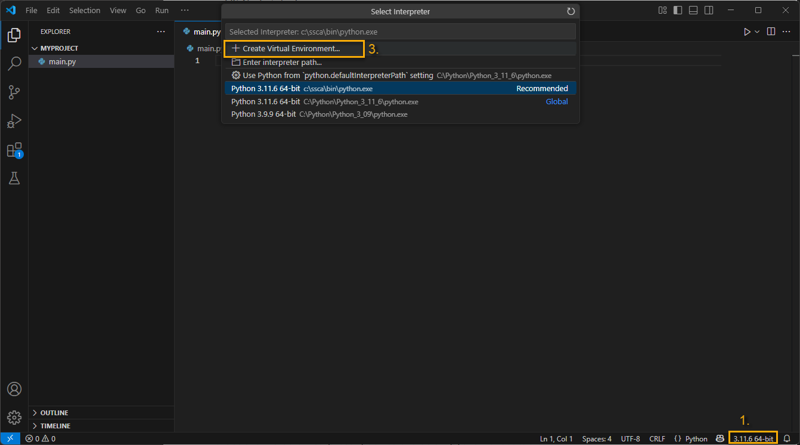
On the next list, click on “Venv”
The application will now ask you to choose from a list of interpreters, click on “Enter interpreter path…”
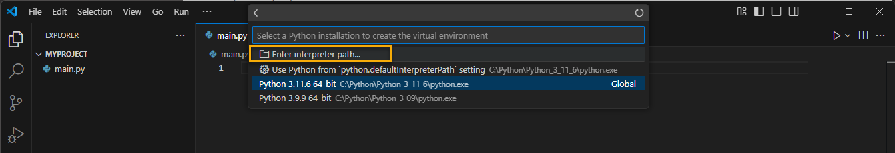
Click again on “Find…”
Navigate to the SSCA Python interpreter.
Windows: This should be located in
<SSCA_install_folder>/bin/python.exeMac/Linux: This should be located in
<SSCA_install_folder>/bin/python3
Now the project’s virtual environment based on SSCA Python interpreter is loading all files from the SSCA install folder.
Once the loading is complete, you will be able to start coding with the SSCA api.
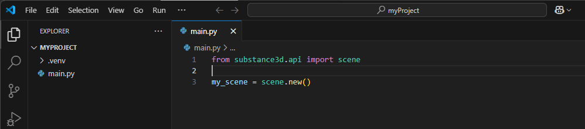
Run your first script
With the file we created in the previous chapter “Set up new project” opened.
Copy the code below into the file. This script creates a simple scene with a light and a cube.
# import the scene module from the api package from substance3d.api import scene, primitive, light # create a new scene my_scene = scene.new() # create a cube shape1 = primitive.cube(my_scene, 'cube') # create a light light1 = light.distant(my_scene, 'distant_light') # save the scene with a valid output filepath output_path = scene.save(my_scene, './TestScene.usda')
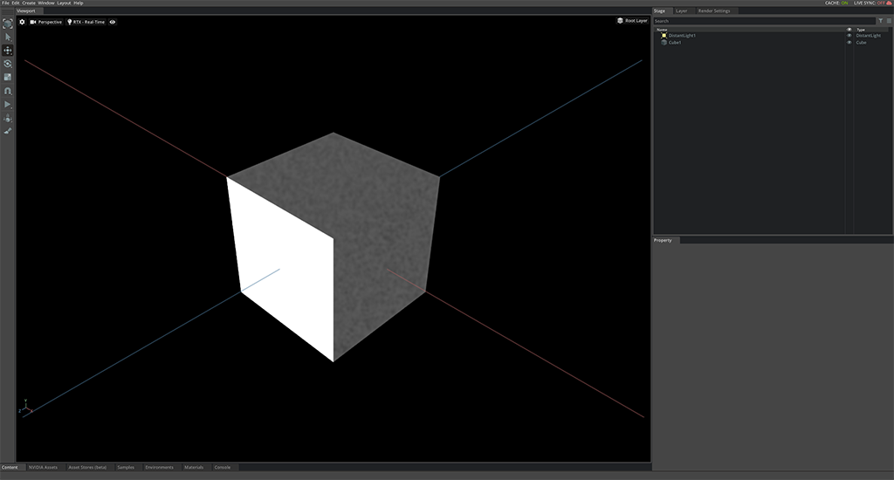
Run the script with shortcut Ctrl+Shift+D
To confirm the script ran successfully, a file called TestScene.usda should have been created in the same folder as your script.
Warning
If the test script fails to find the SSCA modules, there could be a conflict in the environment.
Check your PATH and PXR_PLUGINPATH_NAME environment variables and clean them if needed.
PyCharm Instructions (version 2024.2.3)
Set up new project with virtual environment
Download and install the community version of PyCharm.
Download and unzip the Substance 3D SSCA package.
unzip the SSCA package wherever you want SSCA to be installed.
In our example we will unzip the SSCA package content into:
"C:/ssca/"
Launch PyCharm or if your project already exists, you can jump to the next chapter “Set up a local SSCA Python interpreter”.
Click on
Createa new project from the welcome window.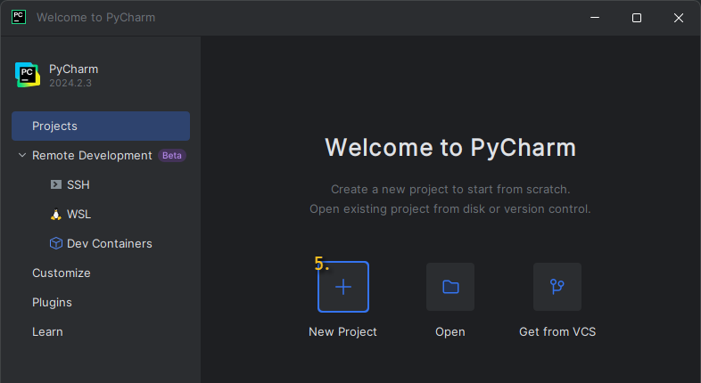
In the next setup window, give your project a Name.
Enter your project Location.
In our example, our project folder will be in:
C:/projects
In the Interpreter type section, select
Project venv.Select SSCA Python version, navigating to your SSCA ‘install’ folder.
Windows: This should be located in
<SSCA_install_folder>/bin/python.exeMac/Linux: This should be located in
<SSCA_install_folder>/bin/python3
Click on
Create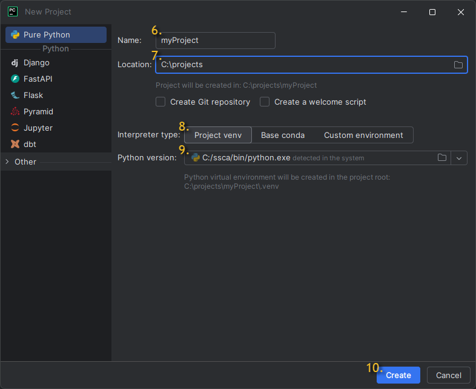
You are now ready to start coding with Python and SSCA in your virtual environment (venv).
Set up a local SSCA Python interpreter
Once your project is open.
Expand PyCharm top menu bar clicking on the “Main Menu” icon.
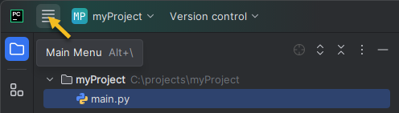
Open PyCharm’s settings with File > Settings (or press Ctrl + Alt + S).
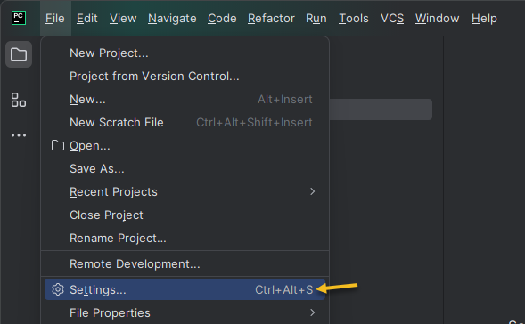
In the left panel, expand “Project: <Your project name>” and then click “Python Interpreter”.
Select Add Interpreter > Add Local Interpreter.
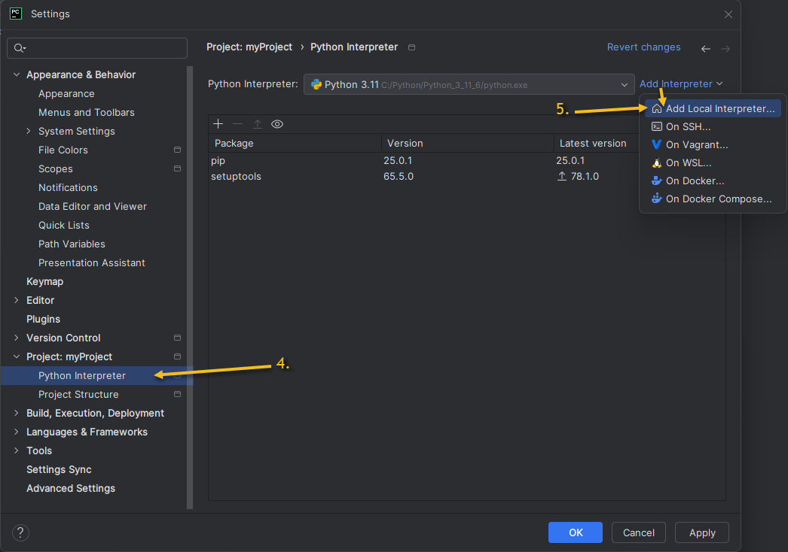
In the new window, select “Virtualenv Environment” from the list of options on the left side of the window that appears.
Enter the path to the python.exe file included within your SSCA ‘install’ (unzipped) folder.
Windows: This should be located in
<SSCA_install_folder>/bin/python.exeMac/Linux: This should be located in
<SSCA_install_folder>/bin/python3
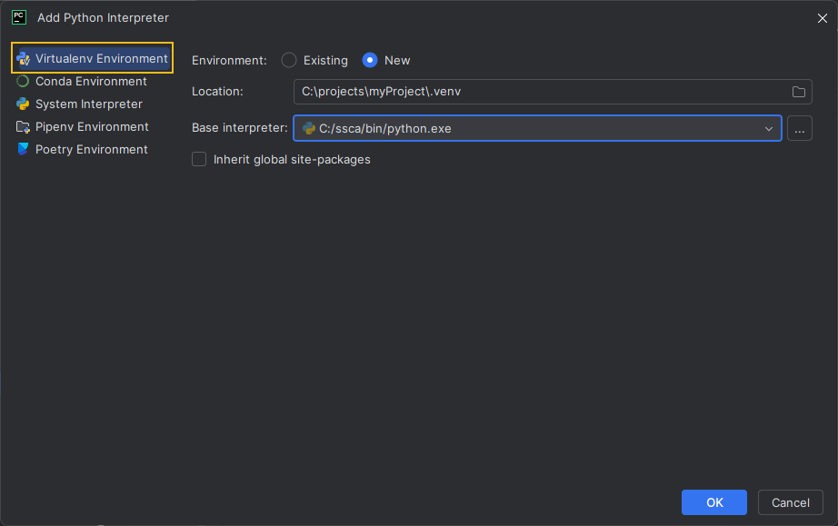
Your Virtual environment (venv) is now created and you can start using your local SSCA Python interpreter.
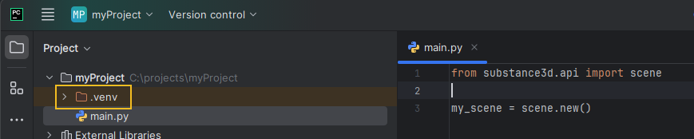
Run your first script
Open/Create a Python script file into your project.
In our example,
C:/projects/myProject/main.py
Copy the code below into the opened file. This script creates a simple scene with a light and a cube.
# import the scene module from the api package from substance3d.api import scene, primitive, light # create a new scene my_scene = scene.new() # create a cube shape1 = primitive.cube(my_scene, 'cube') # create a light light1 = light.distant(my_scene, 'distant_light') # save the scene with a valid output filepath output_path = scene.save(my_scene, './TestScene.usda')
Run the current script with shortcut Ctrl+Shift+F10 (this will create a run configuration based on your script) or click the arrow at the top right of the Pycharm window.
To confirm the script ran successfully, check the console at the bottom of the PyCharm window. The last line should say “Process finished with exit code 0”.
Additionally, a file called TestScene.usda should have been created in the same folder as your script.
Warning
If the test script fails to find the SSCA modules, there could be a conflict in the environment.
Check your PATH and PXR_PLUGINPATH_NAME environment variables and clean them if needed.
Configure your environment for Linux with NVIDIA GPU
On Linux, running machine learning features (e.g., denoiser, match image, etc.) on GPU requires additional setup.
Only NVIDIA GPUs with Ampere or newer architecture are supported and the ones with compute capability >= 8.6 are tested.
Follow the steps below to configure your environment:
Download the NVIDIA CUDA Toolkit from NVIDIA’s website.
Unzip the downloaded file
Include the path in
LD_LIBRARY_PATH
Table of contents
API:
- substance3d.api.scene
- substance3d.api.scene.branch
- substance3d.api.scene.animation
- substance3d.api.primitive
- substance3d.api.variant
- substance3d.api.export
- substance3d.api.thumbnails
- substance3d.api.transform
- substance3d.api.transform.transform_utilities
- substance3d.api.light
- substance3d.api.camera
- substance3d.api.material
- substance3d.api.material.material_utilities
- substance3d.api.renderer
- substance3d.api.image
- substance3d.api.utility
- substance3d.api.mesh_processing
- substance3d.api.stats
User Manual:
- Introduction
- Main Concepts
- Getting Started
- Next Steps
- How to use Handlers
- Known Issues
- CAD & Mesh Processing
- Introduction
- Build a production-ready Digital Twin from a CAD file
- CAD Files Import Options
- parametricTessellationLevel
- prcHoopsAccurateTessellation
- prcHoopsAccurateTessellationWithGrid
- prcHoopsAccurateTessellationWithGridMaximumStitchLength
- prcHoopsAccurateSurfaceCurvatures
- generalRunMeshCleanup
- generalRunUvCorrection
- generalReadHiddenObjects
- parametricMaximalTriangleEdgeLength
- parametricAutomaticallyRetryTessellationOnFailure
- parametricPreferGridStyleTessellation
- prcHoopsUseHeightInsteadOfRatio
- parametricAngleToleranceDeg
- parametricMaxChordHeight
- parametricChordHeightRatio
- Variant Compiler Guide
- Batch Renderer Guide
- BOM Material Assignment Guide
Release Note:
- Substance3d Release Notes
- 1.7.0
- 1.6.0
- 1.5.0 (2026/01/29)
- 1.4.0 (2025/09/23)
- 1.3.1 (April, 17 2025)
- 1.3.0 (March, 25th 2025)
- 1.2.0 (December, 3rd 2024)
- 1.1.0 (July, 23th 2024)
- 1.0.0 - beta1 (March, 21th 2024)
- 1.0.0 - beta0 (January, 15th 2024)
- 0.12.0 (November, 15th 2023)
- 0.11.0 (September, 21st 2023)
- 0.10.0 (September, 18th 2023)
- 0.9.0 (August, 3rd 2023)
- 0.8.0 (June 27th 2023)
- 0.7.0 (May 30th 2023)
- 0.6.0 (May 2nd 2023)
- 0.5.0 (April 14th 2023)
- 0.4.0 (Mars 8th 2023)